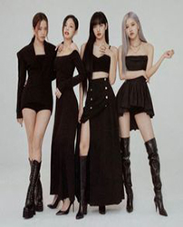
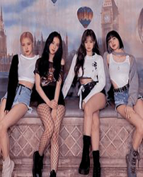
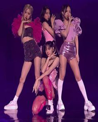
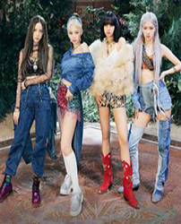

<!DOCTYPE html>
<!-- Website template by freewebsitetemplates.com -->
<html>
<head>
	<meta http-equiv="Content-Type" content="text/html; charset=utf-8" />
	<title>About - blackpink</title>
	<link rel="stylesheet" href="css/style.css" type="text/css" charset="utf-8" />	
</head>

<body> 

	<div id="footer">
		<div id="page">
			<div id="header">
				<div id="contents">
					<a href="index.html" class="logo"></a>
						
				<ul id="navigation">
					<li><a href="index.html">Home</a></li>
					<li><a class="selected"><a href="about.html">Blackpink</a></li>
					<li><a href="blog.html">Members</a></li>
					<li><a href="shop.html">Company</a></li>
					<li><a href="contact-us.html">相關連結</a></li>
				</ul>
			</div> <!-- /#header -->
			<div id="contents">
				<div id="main">
					<h3>
						<b>BLACKPINK（韓語：블랙 핑크，日語：ブラック・ピンク，符號化：BLΛƆKPIИK）是YG娛樂於2016
							年推出的韓國女子音樂組合，也是繼2009年2NE1後該經紀公司時隔7年再次推出的女子偶
							像團體，由Jisoo、Jennie、Rosé、Lisa所組成。2016年8月8日以單曲專輯《Square One》
							雙主打曲《whistle》、《Boombayah》正式出道。
2019年BLACKPINK被《富比士》雜誌評為年度韓國最有影響力的名人，以及第一位女性韓國團體參加《富比士》雜誌「30 Under 30 Asia」，同時也是第一個獲得MTV音樂錄影帶大獎的K-pop女子組合。 BLACKPINK目前是Spotify上關注人數最多的女性群體，也是全球YouTube上訂閱人數最多的音樂帳號。
						
					</h3>

					<h3>
						<b>團名由來：</b><br/>
						<b>YG新女團的團名曾謠傳為「TLC-F」、「Magnum」及「Baby Monster」，2012年Jennie的練習影片中也出現過「Pink Punk」字樣，但這些名稱均未被官方證實是新女團的團名。2016年6月29日，YG娛樂在接連四週公佈四名成員之後，最終公佈了新女團的名稱為「BLACKPINK」，所屬經紀公司表示BLACKPINK帶有稍微否定粉紅色是最美的顏色的涵義，具有「漂亮並不代表全部」的反轉意義，也表示成員們不僅具備外貌、同時也兼具實力，而加上每人在不同的領域均具有領導能力，因此團隊也決定不會設立隊長一職
					</h3>

					<h3>
						<b>歌迷名稱：</b><br/>
						<b>BLACKPINK的官方歌迷名稱為「BLINK」（符號化為BLIИK），這個名稱是在2017年1月14日，於BLACKPINK官方社群網站Instagram上傳的圖片中首度亮相，而圖片中寫有(BLACK) 的字樣雖已被大眾猜測為歌迷名稱，但因公開的圖片未多加說明尚無法確認，直至成員Jennie在1月16日其生日當天於Instagram分享照片，內容除了表示感謝大家給予的祝福之外，並且稱歌迷為「BLINK」，這才證實了官方歌迷名稱。而「BLINK」一詞是由「BLACKPINK」的前兩個字母「BL」和最後三個字母「INK」組成，帶有「眨眼、眨眼之間」"Wink"的含意，其中「LINE」則是連結在一起的意思，有著BLACKPINK和粉絲相連的寓意，藉此表示「BLACKPINK」與「BLINK（歌迷）」是一體的存在。

					</h3>
					<h3>
						<b>應援物品：</b><br/>
						<b>在韓國演藝文化中，團體與歌迷之間的關係相當親密，經紀公司作為團體與歌迷之間的橋梁，為了使得雙方更有互動，便會為該團體設計各種專屬物品。而BLACKPINK在出道兩年之際，YG娛樂社長梁鉉錫在2018年5月中旬透過個人社群網站Instagram發文表示將發行她們的專屬應援物品。這項產品由BLACKPINK成員們在構思階段時即參與了設計，Jennie亦曾提及設計靈感來自於《一週偶像》中的氣錘懲罰。隨著YG娛樂陸續將不同視角的應援物品設計圖釋出，最終在5月23日公開其全貌，為粉色愛心氣錘造型手燈「Biong Bong（블핑봉）」，在同年的5月28日正式販售。發行後，該商品在韓國最大的電子商務平臺G-Market上成為2018年單日最高銷量的周邊商品。於2020年10月初發行第二代的應援手燈。

					</h3>
					
				</div>
				<div id="featured">
					<ul>
						<li></li>
						<li></li>
						<li></li>
						<li class="last"></li>
					</ul>
				
				</div>
			</div> <!-- /#contents -->
			<div id="footer">
				<div id="description">
					<div>
						<a href="index.html" class="logo"></a>
				
					</div>
				<h1>
					    <marquee>	BLACKPINK is the revolution  </marquee></a>

					</h1> 
			</div> <!-- /#footer -->
		</div> <!-- /#page -->
	</div> <!-- /#background -->
</body>
</html>